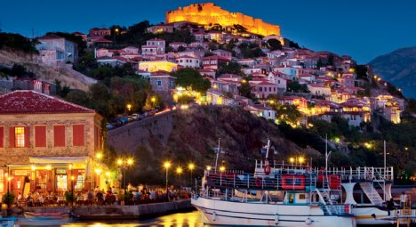

Το κάστρο της Βολισσού

Κτίστηκε κατά τους Βυζαντινούς χρόνους
η χρονολογία κατασκευής του ανάγεται ωστόσο από την έρευνα με μεγαλύτερη πιθανότητα στον 11ο αι.
Είσοδος: ελεύθερη
χάρτης τοποθεσίας:
εμφάνιση χαρτη